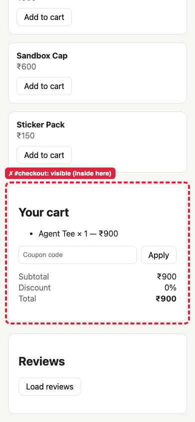
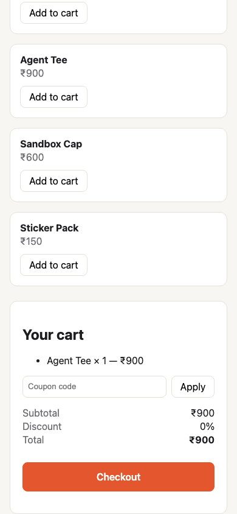

2It fixes it, and proves the fix
✓ Same check · passes
✓ Vision model · 98% confident
✓ Laptop layout · unchanged
BEFORE · customer’s phone

⟵ Checkout missing
The fix · styles.css · one CSS rule
@media (max-width: 480px) {- .header-actions,- .checkout-btn { ← hid checkout+ .header-actions { display: none;
➜
AFTER · same check, fresh copy

✓ Checkout is back ⟶